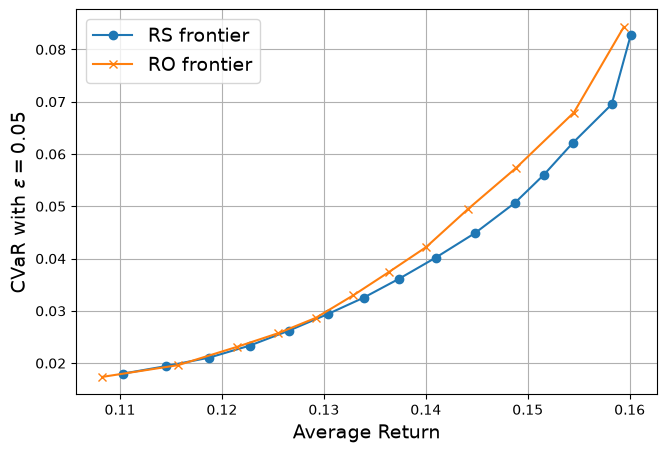

Robust Satisficing for Portfolio Optimization#
In this example, we consider the portfolio optimization problem introduced in [LSZ23], where the decision-maker invests in \(m\) risky assets and the portfolio risk is evaluated using the empirical distribution \(\hat{\mathbb{P}}_n\), constructed from historical data \(\left(\hat{z}_1, ..., \hat{z}_n\right)\). Here, the problem is solved as a robust satisficing model
for some target \(\tau\) of the expected return, and some target \(\beta\) of the \(1-\epsilon\) conditional value at risk (CVaR). Here, \(\mathcal{P}_0(\mathcal{Z})\) represents the set of all distributions for the multivariate random variable that has support \(\mathcal{Z}=\mathbb{R}^m\), and the expression \(\Delta_W(\mathbb{P}, \hat{\mathbb{P}}_n)\) indicates the Wasserstein distance with one-norm between the distribution \(\mathbb{P}\) and empirical distribution \(\hat{\mathbb{P}}_n\). In the subsequent numerical studies, parameters of the models are configured as
The number of assets is \(m=10\);
The penalty parameter \(w=10\);
The CVaR confidence level \(1-\epsilon=0.95\);
The target of the expected return is \(\tau=0.125\);
The target of the CVaR term is \(\beta=0.05\).
m = 10
w = 10
epsilon = 0.05
tau = 0.125
beta = 0.05
Similar to [MEK18], the random return \(\tilde{z}_i\) of each asset is decomposable into a systematic risk factor \(\psi \sim N(0, 5\%)\) common to all assets and an idiosyncratic risk factor \(\zeta_i\in N(i\times 3\%, i\times 2.5\%)\) specific to asset \(i\). The empirical distribution of the random returns \(\tilde{\pmb{z}}\) is then represented by a randomly generated sample dataset using the norm_return() function defined below.
import numpy as np
def norm_return(n, m):
i = np.arange(1, m+1)
psi = 0.05 * np.random.normal(size=(n, m))
zeta = 0.02*i + 0.03*i*np.random.normal(size=(n, m))
zhat = psi + zeta
return zhat
In the following code segment, a empirical dataset named zhat consisting of \(n=300\) records for \(m=10\) assets is generated.
np.random.seed(10)
n, m = 300, 10
zhat = norm_return(n, m)
Equivalent Deterministic Problem#
According to Theorem 9 of [LSZ23], the robust satisficing model can be reformulated as the following deterministic linear optimization problem:
from rsome import ro
import rsome as rso
model = ro.Model()
x = model.dvar(m)
alpha = model.dvar()
y1 = model.dvar(n)
y2 = model.dvar(n)
model.min(rso.norm(x, 'inf'))
model.st((1/n) * y1.sum() >= tau, y1 <= zhat@x)
model.st(alpha + (1/n/epsilon)*y2.sum() <= beta)
model.st(y2 >= 0)
for s in range(n):
model.st(y1[s] <= x@zhat[s],
y2[s] >= -x@zhat[s] - alpha)
model.st(x.sum() == 1, x >= 0)
model.solve()
Being solved by the Scipy LP solver...
Solution status: 0
Running time: 0.0093s
The optimal solution in terms of the investment decision is given below.
print(x.get())
[0. 0.01019506 0.12372562 0.12372562 0.12372562 0.12372562
0.12372562 0.12372562 0.12372562 0.12372562]
Scenario-Wise Robust Optimization Problem#
The robust satisficing model above is also equivalent to the following scenario-wise optimization problem:
with the support \(\mathcal{Z}_s = \left\{(\pmb{z}, u): \|\pmb{z} - \hat{\pmb{z}}_s\| \leq u\right\}\) for each sample \(s\). This robust model is implemented by the code segment below.
from rsome import ro
import rsome as rso
model = ro.Model()
x = model.dvar(m)
alpha = model.dvar()
k0 = model.dvar()
k1 = model.dvar()
v1 = model.dvar(n)
v2 = model.dvar(n)
z = model.rvar(m)
u = model.rvar()
model.min(k0 + w*k1)
model.st(v1.sum() * (1/n) >= tau)
model.st(alpha + v2.sum() * (1/n) <= beta)
for s in range(n):
uset = (rso.norm(z - zhat[s], 1) <= u)
model.st(v1[s] <= z@x + k0*u,
v2[s] >= (1/epsilon)*(-z@x-alpha) - k1*u,
v2[s] >= -k1*u, forall=uset)
model.st(x >= 0, x.sum() == 1)
model.solve()
Being solved by the Scipy LP solver...
Solution status: 0
Running time: 0.6471s
The equivalent robust model yields the same optimal solution as the previous deterministic optimization problem.
print(x.get())
[0. 0.01019506 0.12372562 0.12372562 0.12372562 0.12372562
0.12372562 0.12372562 0.12372562 0.12372562]
Distributionally Robust Model#
Alternatively, the robust satisficing model can be directly formulated as an RSOME dro model.
from rsome import dro
from rsome import E
import rsome as rso
model = dro.Model(n)
x = model.dvar(m)
alpha = model.dvar()
k0 = model.dvar()
k1 = model.dvar()
z = model.rvar(m)
u = model.rvar()
fset = model.ambiguity()
for s in range(n):
fset[s].suppset(rso.norm(z-zhat[s], 1) <= u)
pr = model.p
fset.probset(pr == 1/n)
model.minsup(k0 + w*k1, forall=fset)
model.st(E(z@x) >= tau - E(k0*u))
model.st(alpha + (1/epsilon)*E(rso.maxof(-z@x-alpha, 0) - epsilon*k1*u) <= beta)
model.st(x >= 0, x.sum() == 1)
model.solve()
Being solved by the Scipy LP solver...
Solution status: 0
Running time: 0.6456s
Here, we use the scenario-wise ambiguity set proposed in [CSX20] to capture the Wasserstein distance, the same optimal solution can be obtained as follows.
print(x.get())
[-0. 0.01019506 0.12372562 0.12372562 0.12372562 0.12372562
0.12372562 0.12372562 0.12372562 0.12372562]
Performance of the Robust Satisficing Model#
In this section, we will assess the performance in terms of the out-of-sample mean return and CVaR of the robust satisficing model under different target \(\tau\). The out-of-sample CVaR is evaluated using the out_cvar() function defined below.
def out_cvar(rs, epsilon):
n = len(rs)
model = ro.Model()
alpha = model.dvar()
v = model.dvar(n)
model.min(alpha + (1/n/epsilon) * v.sum())
model.st(v >= 0, v >= -rs - alpha)
model.solve(display=False)
return model.get()
The robust satisficing model is also defined as the following portfolio_rs() function.
def portfolio_rs(zhat, beta, tau, epsilon):
model = ro.Model()
x = model.dvar(m)
alpha = model.dvar()
y1 = model.dvar(n)
y2 = model.dvar(n)
model.min(rso.norm(x, 'inf'))
model.st((1/n) * y1.sum() >= tau, y1 <= zhat@x)
model.st(alpha + (1/n/epsilon)*y2.sum() <= beta)
model.st(y2 >= 0)
for s in range(n):
model.st(y1[s] <= x@zhat[s], y2[s] >= -x@zhat[s] - alpha)
model.st(x.sum() == 1, x >= 0)
model.solve(display=False)
return x.get()
It is compared with a robust optimization model
where \(\mathcal{B}(r)\) is a Wasserstein ambiguity set with the one-norm distance to be \(r\). The robust optimization model is defined as the following protfolio_ro() function.
def portfolio_ro(zhat, d, beta, epsilon):
if d == 0:
d = 1e-6
n, m = zhat.shape
model = dro.Model(n)
x = model.dvar(m)
alpha = model.dvar()
z = model.rvar(m)
u = model.rvar()
fset = model.ambiguity()
for s in range(n):
fset[s].suppset(rso.norm(z - zhat[s], 1) <= u)
fset.exptset(E(u) <= d)
pr = model.p
fset.probset(pr == 1/n)
model.maxinf(E(z@x), fset)
model.st(alpha + (1/epsilon)*E(rso.maxof(-z@x-alpha, 0)) <= beta)
model.st(x >= 0, x.sum() == 1)
model.solve(display=False)
return x.get()
We first run the robust optimization model protfolio_ro() as the Wasserstein distance parameter r is varying from \(0\) to \(0.02\). The out-of-sample performance interms of the mean and CVaR is calculated based on a randomly generated sample dataset with \(10,000\) records. Besides, the in-sample average return of the solution yielded under r=0.0 is defined to be Tmax, representing the maximum value of the target \(\tau\). The in-sample average return of an equal-weighted portfolio is defined to be Tmin, representing the minimum value of \(\tau\).
zout = norm_return(10000, m)
means_ro = []
cvars_ro = []
dmax = 0.0
r_values = np.linspace(0, 0.02, 12)
for r in r_values:
xs = portfolio_ro(zhat, r, beta, epsilon)
rs = zout@xs
if r == 0:
Tmax = (zhat@xs).mean()
means_ro.append(rs.mean())
cvars_ro.append(out_cvar(rs, epsilon))
Tmin = (zhat@(np.ones(m)/m)).mean()
The following code solves the robust satisficing model as the target \(\tau\) changes between Tmin and Tmax, and out-of-sample mean and CVaR are also calculated to assess the performance of the robust satisficing decisions.
tau_values = np.linspace(Tmin, Tmax, 15)
sols = np.zeros((len(tau_values), m))
means_rs = []
cvars_rs = []
for tau in tau_values:
xs = portfolio_rs(zhat, beta, tau, epsilon)
rs = zout@xs
means_rs.append(rs.mean())
cvars_rs.append(out_cvar(rs, epsilon))
The performance of the robust model and the satisficing model is shown in the following figure. Please refer to Fig. 4 of [LSZ23] for the similar results.
import matplotlib.pyplot as plt
plt.figure(figsize=(7.5, 5))
plt.plot(means_rs, cvars_rs, marker='o', label='RS frontier')
plt.plot(means_ro, cvars_ro, marker='x', label='RO frontier')
plt.legend(fontsize=14)
plt.xlabel('Average Return', fontsize=14)
plt.ylabel(r'CVaR with $\epsilon={}$'.format(epsilon), fontsize=14)
plt.grid()
plt.show()

Reference
Zhi Chen, Melvyn Sim, and Peng Xiong. Robust stochastic optimization made easy with RSOME. Management Science, 66(8):3329–3339, 2020.
Daniel Zhuoyu Long, Melvyn Sim, and Minglong Zhou. Robust satisficing. Operations Research, 71(1):61–82, 2023.
Peyman Mohajerin Esfahani and Daniel Kuhn. Data-driven distributionally robust optimization using the wasserstein metric: performance guarantees and tractable reformulations. Mathematical Programming, 171(1-2):115–166, 2018.